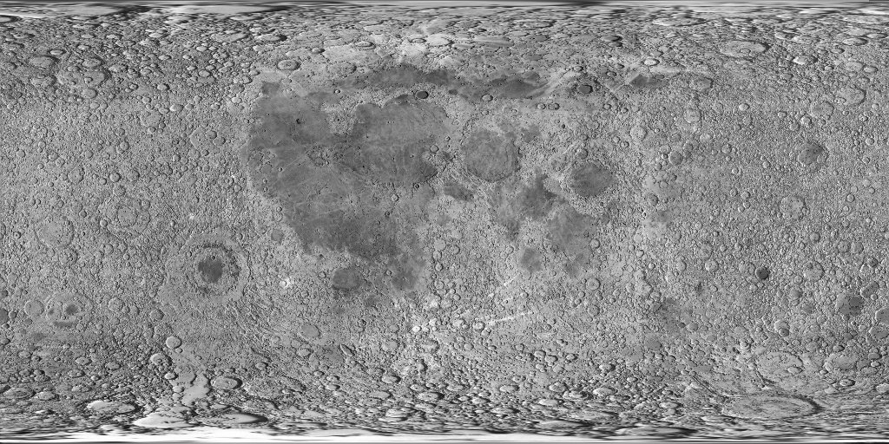

Standard Hiro AR Marker
Point another phone's camera at this square, or show it on your computer screen.

Initializing Camera & 3D Assets...
Point another phone's camera at this square, or show it on your computer screen.


